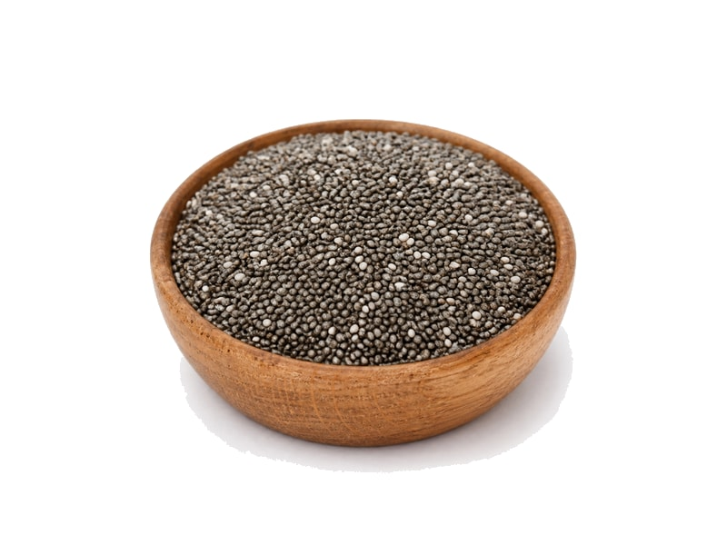

Orzechy
Nasiona chia
Nasiona chia: 17 g białka, 486 kcal, 42 g węglowodanów i 31 g tłuszczu na 100 g. Kategoria: Orzechy.
Kalorie486 kcalna 100 g
Białko / proteiny17 g
Węglowodany42 g
Tłuszcz31 g
Cena (szac.)~4,33 złza 100 g
Ceny zaktualizowano: maj 2026 (szacunek — ceny w popularnych supermarketach)
Porcja: łyżka (15g)
| Kalorie | 73 kcal |
|---|---|
| Białko | 2.5 g |
| Węglowodany | 6.3 g |
| Tłuszcz | 4.6 g |
| Cena (szac.) | ~0,65 zł |
Szczegółowe składniki odżywcze na 100 g
| Wartość energetyczna (kalorie) | 486 kcal |
|---|---|
| Białko (proteiny) | 17 g |
| Węglowodany | 42 g |
| Tłuszcz | 31 g |
| Tłuszcze nasycone | 3 g |
| Tłuszcze nienasycone | 28 g |
| Witaminy i minerały | Omega-3, Magnez, Witamina E |
| Współczynnik kcal / 1 g białka | 28.6 |
| Cena produktu (szac. za 100 g) | ~4,33 zł |
| Cena za 100 g białka (szac.) | ~25,49 zł |